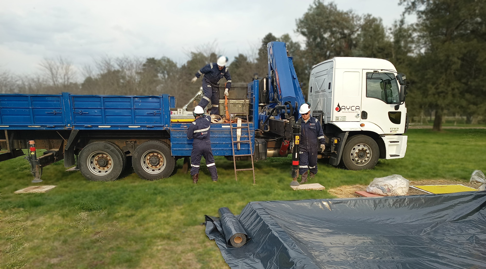

Asistencia al servicio de Inspeccion de ductos
La empresa brinda un servicio técnico integral, dando asistencia en la inspección interna de
ductos para preservar la integridad de los mismos.
Coordinacion de equipos de trabajo
Llevar a cabo con el cliente la coordinacion de grupos de trabajo, estableciento cronograma de
fechas posibles,
recursos necesarios, documentacion y otros requisitos, para el desarrollo de las tareas.
Recursos humanos y mobilidad
La empresa dispone de personal con experiencia, coordinadores de equipos y asistentes para
llevar a cabo las tareas en campo. Incluye mobilidad al lugar de la obra, herramientas y
asistencia con equipos de trabajo: Camionetas 4x4 equipadas y camiones con maquinaria de
izaje.
Gestion de documentos
Brindamos un servicio dedicado a la gestion de documentos para el ingreso y actualizada durante
el plazo determinado de las tareas en el lugar de la Obra. La empresa cuenta con un departamento
especializado en generar y mantener actualizada la documentacion de todo el personal y la
flota, permitiendo de esta forma el desarrollo de las actividades sin interrupciones por
vencimientos de polizas, examenes, cursos o cuaquier otra documentacion que el cliente final
solicite necesaria para el desarrollo de las actividades.
Colocacion de Marcadores
Como servicio adicional de las tareas de asistencia, Ayca dsipone de personal con experiencia y
conocimiento estrategico de lugares para la colocacion de marcadores a lo largo de la traza para
realizar el seguimiento de la herramienta que será lanzada posteriormente .
Traslado y Limpieza de herramientas
Servicio adicional de limpieza y traslado de herramientas a workshop del cliente
